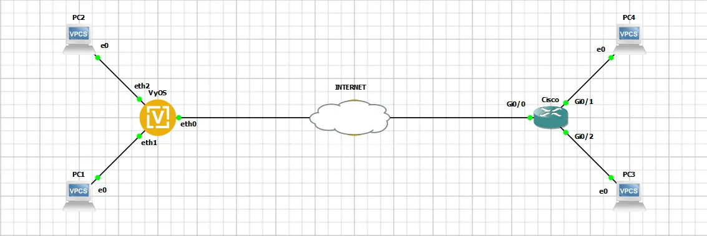

Policy-based Site-to-Site VPN IPsec between VyOS and Cisco
This document is to describe a basic setup using policy-based site-to-site VPN IPsec. In this example we use VyOS 1.5 and Cisco IOS. Cisco initiates IPsec connection only if interesting traffic present. For stable work we recommend configuring an initiator role on VyOS side.
Network Topology

Prerequirements
VyOS:
WAN IP |
10.0.1.2/30 |
LAN1 IP |
192.168.0.1/24 |
LAN2 IP |
192.168.1.1/24 |
Cisco:
WAN IP |
10.0.2.2/30 |
LAN1 IP |
192.168.10.1/24 |
LAN2 IP |
192.168.11.1/24 |
IKE parameters:
Encryption |
AES-256 |
HASH |
SHA-1 |
Diff-Helman Group |
14 |
Life-Time |
28800 |
IKE Version |
2 |
IPsec parameters:
Encryption |
AES-256 |
HASH |
SHA-256 |
Life-Time |
3600 |
PFS |
disable |
- Traffic Selectors
192.168.0.0/24 <==> 192.168.10.0/24
192.168.1.0/24 <==> 192.168.11.0/24
Hosts configuration
PC1 IP |
192.168.0.2 |
PC2 IP |
192.168.1.2 |
PC3 IP |
192.168.10.2 |
PC4 IP |
192.168.11.2 |
Configuration
Note
Pfs is disabled in Cisco by default.
VyOS
set interfaces ethernet eth0 address '10.0.1.2/30'
set interfaces ethernet eth1 address '192.168.0.1/24'
set interfaces ethernet eth2 address '192.168.1.1/24'
set protocols static route 0.0.0.0/0 next-hop 10.0.1.1
set vpn ipsec authentication psk AUTH-PSK id '10.0.1.2'
set vpn ipsec authentication psk AUTH-PSK id '10.0.2.2'
set vpn ipsec authentication psk AUTH-PSK secret 'dGVzdA=='
set vpn ipsec authentication psk AUTH-PSK secret-type 'base64'
set vpn ipsec esp-group ESP-GROUP lifetime '3600'
set vpn ipsec esp-group ESP-GROUP pfs 'disable'
set vpn ipsec esp-group ESP-GROUP proposal 10 encryption 'aes256'
set vpn ipsec esp-group ESP-GROUP proposal 10 hash 'sha256'
set vpn ipsec ike-group IKE-GROUP close-action 'start'
set vpn ipsec ike-group IKE-GROUP dead-peer-detection action 'restart'
set vpn ipsec ike-group IKE-GROUP dead-peer-detection interval '10'
set vpn ipsec ike-group IKE-GROUP key-exchange 'ikev2'
set vpn ipsec ike-group IKE-GROUP lifetime '28800'
set vpn ipsec ike-group IKE-GROUP proposal 10 dh-group '14'
set vpn ipsec ike-group IKE-GROUP proposal 10 encryption 'aes256'
set vpn ipsec ike-group IKE-GROUP proposal 10 hash 'sha1'
set vpn ipsec site-to-site peer CISCO authentication local-id '10.0.1.2'
set vpn ipsec site-to-site peer CISCO authentication mode 'pre-shared-secret'
set vpn ipsec site-to-site peer CISCO authentication remote-id '10.0.2.2'
set vpn ipsec site-to-site peer CISCO connection-type 'initiate'
set vpn ipsec site-to-site peer CISCO default-esp-group 'ESP-GROUP'
set vpn ipsec site-to-site peer CISCO ike-group 'IKE-GROUP'
set vpn ipsec site-to-site peer CISCO local-address '10.0.1.2'
set vpn ipsec site-to-site peer CISCO remote-address '10.0.2.2'
set vpn ipsec site-to-site peer CISCO tunnel 1 local prefix '192.168.0.0/24'
set vpn ipsec site-to-site peer CISCO tunnel 1 remote prefix '192.168.10.0/24'
set vpn ipsec site-to-site peer CISCO tunnel 2 local prefix '192.168.1.0/24'
set vpn ipsec site-to-site peer CISCO tunnel 2 remote prefix '192.168.11.0/24'
Cisco
crypto ikev2 proposal aes-cbc-256-proposal
encryption aes-cbc-256
integrity sha1
group 14
!
crypto ikev2 policy policy1
match address local 10.0.2.2
proposal aes-cbc-256-proposal
!
crypto ikev2 keyring keys
peer VyOS
address 10.0.1.2
pre-shared-key local test
pre-shared-key remote test
!
crypto ikev2 profile IKEv2-profile
match identity remote address 10.0.1.2 255.255.255.255
authentication remote pre-share
authentication local pre-share
keyring local keys
lifetime 28800
!
crypto ipsec transform-set TS esp-aes 256 esp-sha256-hmac
mode tunnel
!
crypto map IPSEC-map 10 ipsec-isakmp
set peer 10.0.1.2
set security-association lifetime seconds 3600
set transform-set TS
set ikev2-profile IKEv2-profile
match address cryptoacl
!
interface GigabitEthernet0/0
ip address 10.0.2.2 255.255.255.252
crypto map IPSEC-map
!
interface GigabitEthernet0/1
ip address 192.168.10.1 255.255.255.0
!
interface GigabitEthernet0/2
ip address 192.168.11.1 255.255.255.0
!
ip route 0.0.0.0 0.0.0.0 10.0.2.1
!
ip access-list extended cryptoacl
permit ip 192.168.10.0 0.0.0.255 192.168.0.0 0.0.0.255
permit ip 192.168.11.0 0.0.0.255 192.168.1.0 0.0.0.255
Monitoring
Monitoring on VyOS side
IKE SAs:
vyos@vyos:~$ show vpn ike sa
Peer ID / IP Local ID / IP
------------ -------------
10.0.2.2 10.0.2.2 10.0.1.2 10.0.1.2
State IKEVer Encrypt Hash D-H Group NAT-T A-Time L-Time
----- ------ ------- ---- --------- ----- ------ ------
up IKEv2 AES_CBC_256 HMAC_SHA1_96 MODP_2048 no 304 26528
IPsec SAs:
vyos@vyos:~$ show vpn ipsec sa
Connection State Uptime Bytes In/Out Packets In/Out Remote address Remote ID Proposal
-------------- ------- -------- -------------- ---------------- ---------------- ----------- -----------------------------
CISCO-tunnel-1 up 6m6s 0B/0B 0/0 10.0.2.2 10.0.2.2 AES_CBC_256/HMAC_SHA2_256_128
CISCO-tunnel-2 up 6m6s 0B/0B 0/0 10.0.2.2 10.0.2.2 AES_CBC_256/HMAC_SHA2_256_128
Monitoring on Cisco side
IKE SAs:
Cisco#show crypto ikev2 sa
IPv4 Crypto IKEv2 SA
Tunnel-id Local Remote fvrf/ivrf Status
1 10.0.2.2/4500 10.0.1.2/4500 none/none READY
Encr: AES-CBC, keysize: 256, PRF: SHA1, Hash: SHA96, DH Grp:14, Auth sign: PSK, Auth verify: PSK
Life/Active Time: 28800/471 sec
IPv6 Crypto IKEv2 SA
IPsec SAs:
Cisco#show crypto ipsec sa
interface: GigabitEthernet0/0
Crypto map tag: IPSEC-map, local addr 10.0.2.2
protected vrf: (none)
local ident (addr/mask/prot/port): (192.168.11.0/255.255.255.0/0/0)
remote ident (addr/mask/prot/port): (192.168.1.0/255.255.255.0/0/0)
current_peer 10.0.1.2 port 4500
PERMIT, flags={origin_is_acl,}
#pkts encaps: 0, #pkts encrypt: 0, #pkts digest: 0
#pkts decaps: 0, #pkts decrypt: 0, #pkts verify: 0
#pkts compressed: 0, #pkts decompressed: 0
#pkts not compressed: 0, #pkts compr. failed: 0
#pkts not decompressed: 0, #pkts decompress failed: 0
#send errors 0, #recv errors 0
local crypto endpt.: 10.0.2.2, remote crypto endpt.: 10.0.1.2
plaintext mtu 1438, path mtu 1500, ip mtu 1500, ip mtu idb GigabitEthernet0/0
current outbound spi: 0xC81F83DA(3357508570)
PFS (Y/N): N, DH group: none
inbound esp sas:
spi: 0x8C63C51E(2355348766)
transform: esp-256-aes esp-sha256-hmac ,
in use settings ={Tunnel, }
conn id: 23, flow_id: SW:23, sibling_flags 80000040, crypto map: IPSEC-map
sa timing: remaining key lifetime (k/sec): (4231729/3585)
IV size: 16 bytes
replay detection support: Y
Status: ACTIVE(ACTIVE)
inbound ah sas:
inbound pcp sas:
outbound esp sas:
spi: 0xC81F83DA(3357508570)
transform: esp-256-aes esp-sha256-hmac ,
in use settings ={Tunnel, }
conn id: 24, flow_id: SW:24, sibling_flags 80000040, crypto map: IPSEC-map
sa timing: remaining key lifetime (k/sec): (4231729/3585)
IV size: 16 bytes
replay detection support: Y
Status: ACTIVE(ACTIVE)
outbound ah sas:
outbound pcp sas:
protected vrf: (none)
local ident (addr/mask/prot/port): (192.168.10.0/255.255.255.0/0/0)
remote ident (addr/mask/prot/port): (192.168.0.0/255.255.255.0/0/0)
current_peer 10.0.1.2 port 4500
PERMIT, flags={origin_is_acl,}
#pkts encaps: 0, #pkts encrypt: 0, #pkts digest: 0
#pkts decaps: 0, #pkts decrypt: 0, #pkts verify: 0
#pkts compressed: 0, #pkts decompressed: 0
#pkts not compressed: 0, #pkts compr. failed: 0
#pkts not decompressed: 0, #pkts decompress failed: 0
#send errors 0, #recv errors 0
local crypto endpt.: 10.0.2.2, remote crypto endpt.: 10.0.1.2
plaintext mtu 1438, path mtu 1500, ip mtu 1500, ip mtu idb GigabitEthernet0/0
current outbound spi: 0xC40C7A20(3289152032)
PFS (Y/N): N, DH group: none
inbound esp sas:
spi: 0x2948B6CB(692631243)
transform: esp-256-aes esp-sha256-hmac ,
in use settings ={Tunnel, }
conn id: 21, flow_id: SW:21, sibling_flags 80000040, crypto map: IPSEC-map
sa timing: remaining key lifetime (k/sec): (4194891/3581)
IV size: 16 bytes
replay detection support: Y
Status: ACTIVE(ACTIVE)
inbound ah sas:
inbound pcp sas:
outbound esp sas:
spi: 0xC40C7A20(3289152032)
transform: esp-256-aes esp-sha256-hmac ,
in use settings ={Tunnel, }
conn id: 22, flow_id: SW:22, sibling_flags 80000040, crypto map: IPSEC-map
sa timing: remaining key lifetime (k/sec): (4194891/3581)
IV size: 16 bytes
replay detection support: Y
Status: ACTIVE(ACTIVE)
outbound ah sas:
outbound pcp sas:
Checking Connectivity
ICMP packets from PC1 to PC3.
PC1> ping 192.168.10.2
84 bytes from 192.168.10.2 icmp_seq=1 ttl=62 time=8.479 ms
84 bytes from 192.168.10.2 icmp_seq=2 ttl=62 time=3.344 ms
84 bytes from 192.168.10.2 icmp_seq=3 ttl=62 time=3.139 ms
84 bytes from 192.168.10.2 icmp_seq=4 ttl=62 time=3.176 ms
84 bytes from 192.168.10.2 icmp_seq=5 ttl=62 time=3.978 ms
ICMP packets from PC2 to PC4.
PC2> ping 192.168.11.2
84 bytes from 192.168.11.2 icmp_seq=1 ttl=62 time=9.687 ms
84 bytes from 192.168.11.2 icmp_seq=2 ttl=62 time=3.286 ms
84 bytes from 192.168.11.2 icmp_seq=3 ttl=62 time=2.972 ms